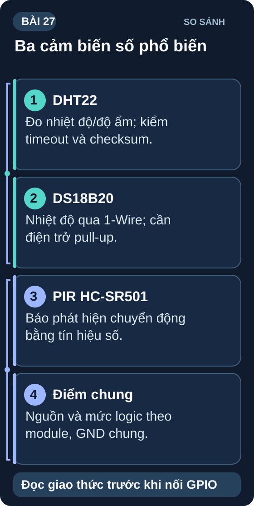
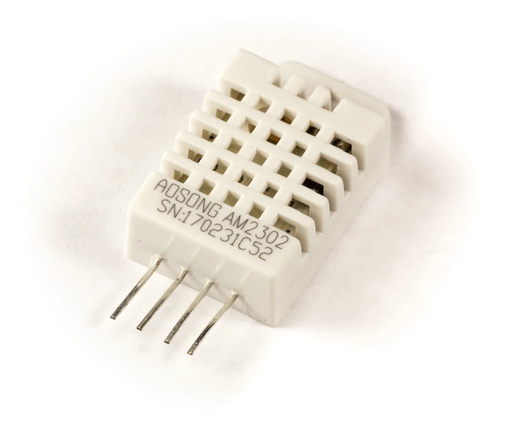
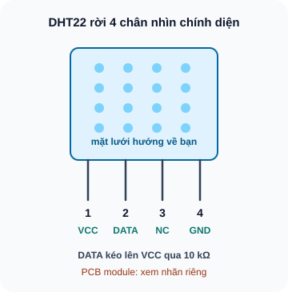
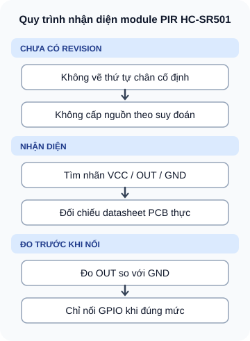

Cảm Biến Số — DHT22, DS18B20 & PIR
Ba cảm biến số thực tế phổ biến nhất — từ giao thức 1-Wire đến single-wire DHT và hồng ngoại PIR.
- Phân biệt cảm biến analog (NTC) vs cảm biến số (DHT22, DS18B20)
- Kết nối và đọc DHT22 — nhiệt độ và độ ẩm (single-wire protocol)
- Hiểu 1-Wire protocol — DS18B20 nhiều cảm biến trên 1 dây
- Xử lý lỗi DHT: nan, timeout, checksum error
- Kết nối và đọc DS18B20 — tìm địa chỉ ROM 64-bit
- PIR HC-SR501 — hoạt động, điều chỉnh sensitivity và delay
- Thiết kế hệ thống đa cảm biến với error handling hoàn chỉnh
- So sánh độ chính xác: NTC vs DHT22 vs BME280


Dụng cụ
| Tên | Thông số | SL |
|---|---|---|
| Cảm biến DHT22 (AM2302) | Nhiệt độ ±0,5°C, Độ ẩm ±2% RH — tốt hơn DHT11 | 1 |
| Cảm biến DS18B20 | Nhiệt độ ±0,5°C, 1-Wire, -55°C đến 125°C | 2 |
| Cảm biến PIR HC-SR501 | Phát hiện chuyển động hồng ngoại | 1 |
| Điện trở 4,7kΩ | Pull-up cho 1-Wire DS18B20 | 2 |
| Điện trở 10kΩ | Pull-up cho DHT22 data line | 1 |
| Arduino/ESP32 + breadboard | — | 1 bộ |
1. DHT22 — Cảm biến nhiệt độ & độ ẩm

Bản chữ của sơ đồ
DHT22 cảm biến rời 4 chân, mặt lưới hướng về người xem, chân xuống dưới: 1 VCC, 2 DATA, 3 NC, 4 GND. Ví dụ cấp 3,3 V, DATA kéo lên 3,3 V qua 10 kΩ tới GPIO, pin 3 bỏ trống, GND chung. Module gắn PCB có thể có pinout và pull-up khác, phải đọc nhãn/datasheet module.
// DHT22 — Arduino với thư viện DHT sensor library (Adafruit)
#include "DHT.h"
#define DHT_PIN 4
#define DHT_TYPE DHT22
DHT dht(DHT_PIN, DHT_TYPE);
void setup() {
Serial.begin(115200);
dht.begin();
}
void loop() {
delay(2000); // DHT22 cần ≥2s giữa các lần đọc
float humidity = dht.readHumidity();
float temperature = dht.readTemperature(); // °C
if (isnan(humidity) || isnan(temperature)) {
Serial.println("ERROR: DHT read failed!");
return;
}
Serial.printf("Temp: %.1f°C Humi: %.1f%%\n", temperature, humidity);
}
2. DS18B20 — Cảm biến nhiệt độ 1-Wire
DS18B20 dùng giao thức 1-Wire — chỉ cần 1 dây dữ liệu + GND (VCC có thể lấy từ dây data). Ưu điểm lớn: nhiều DS18B20 trên cùng 1 dây, phân biệt bởi địa chỉ ROM 64-bit unique.
Ví dụ này dùng DS18B20 TO-92 nguồn riêng 3,3V, không dùng chế độ cấp nguồn ký sinh. Nhìn mặt phẳng có chữ, chân hướng xuống: chân 1 GND, chân 2 DQ, chân 3 VDD theo datasheet ADI/Maxim. Nối VDD của cả hai cảm biến tới 3,3V, GND tới GND chung, hai DQ cùng tới GPIO5 và kéo DQ lên 3,3V qua 4,7kΩ. Kiểm package và chân của đúng linh kiện trước khi cấp nguồn; thứ tự ByIndex có thể thay đổi, dùng ROM 64-bit nếu cần gán tên vị trí ổn định.
// DS18B20 — cài OneWire + DallasTemperature library
#include <OneWire.h>
#include <DallasTemperature.h>
#define ONE_WIRE_PIN 5
OneWire oneWire(ONE_WIRE_PIN);
DallasTemperature sensors(&oneWire);
void setup() {
Serial.begin(115200);
sensors.begin();
Serial.print("Found ");
Serial.print(sensors.getDeviceCount());
Serial.println(" sensor(s)");
}
void loop() {
sensors.requestTemperatures(); // Gửi lệnh đo
for (int i = 0; i < sensors.getDeviceCount(); ++i) {
float tempC = sensors.getTempCByIndex(i);
if (tempC == DEVICE_DISCONNECTED_C)
Serial.printf("ERROR: sensor index %d disconnected\n", i);
else
Serial.printf("DS18B20 index %d: %.2f°C\n", i, tempC);
}
delay(1000);
}
3. PIR HC-SR501 — Phát hiện chuyển động

Bản chữ của sơ đồ
Không có PCB/revision cụ thể nên không thể xác nhận thứ tự ba chân từ hình. Tắt nguồn; đọc nhãn VCC, OUT, GND trên PCB thực; đối chiếu tài liệu đúng module; cấp VCC theo nhãn; đo OUT HIGH/LOW với GND và chỉ nối GPIO 3,3 V sau khi xác nhận mức điện áp. Không suy vị trí chân từ ảnh hoặc hướng biến trở; nếu OUT vượt giới hạn GPIO dùng chuyển mức.
PIR HC-SR501 cần 30–60 giây warm-up sau khi cấp nguồn để ổn định. Trong thời gian này có thể trigger sai. Code cần delay(60000) trong setup() hoặc bỏ qua 60 giây đầu.
1: (a) Không có pull-up 10kΩ — kiểm tra điện áp data line (~3,3V idle); (b) Đọc quá nhanh (<2s) — thêm delay(2000); (c) DHT22 bị đứt hoặc hỏng — thay DHT22 mới; (d) Điện áp VCC không đúng — DHT22 cần 3,3V hoặc 5V, kiểm tra V_VCC; (e) GPIO pin bị conflict — thử đổi sang GPIO khác.
2: DS18B20 — lý do: 5 cảm biến có thể nối song song trên 1 dây dữ liệu duy nhất (1-Wire topology). Chỉ cần 3 dây (VCC, GND, DATA) chạy dọc tủ lạnh, cắm 5 DS18B20 tại các điểm. DHT22 cần 5 dây data riêng hoặc 5 GPIO pins riêng.
3: PIR nhạy với thay đổi nhiệt độ hồng ngoại đột ngột. Sáng sớm: ánh sáng mặt trời chiếu qua cửa sổ → nhiệt độ thay đổi nhanh → PIR trigger. Giải pháp: (a) Che PIR tránh hướng cửa sổ trực tiếp; (b) Giảm sensitivity (biến trở Sx về ít nhạy hơn); (c) Kết hợp logic: PIR + thêm điều kiện ánh sáng (LDR) để phân biệt người vs ánh sáng.